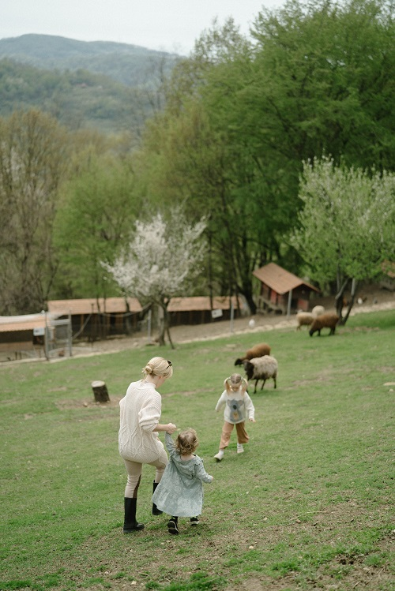
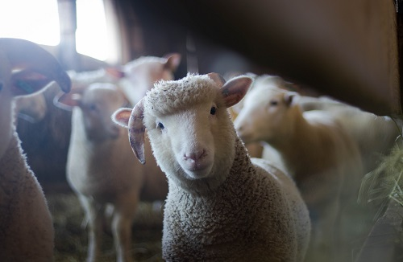
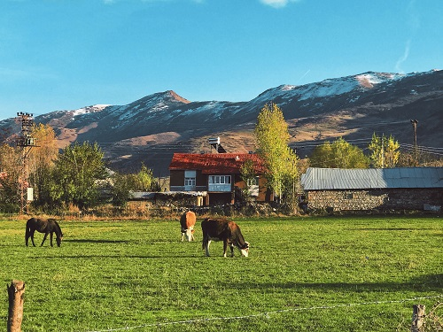

The modern zoo:
Until the early 19th century, the function of the zoo was often to symbolize royal power, like King Louis XIV's menagerie at Versailles. Major cities in Europe set up zoos in the 19th century, usually using London and Paris as models. The transition was made from princely menageries designed to entertain high society with strange novelties into public zoological gardens. The new goal was to educate the entire population with information along modern scientific lines. Zoos were supported by local commercial or scientific societies.
Visiting time:
| Day | Time | Price |
|---|---|---|
| Monday | 09:00 - 17:00 | 10£ |
| Tuesday | 09:00 - 17:00 | 10£ |
| Wednsday | 09:00 - 17:00 | 10£ |
| Thursday | 09:00 - 17:00 | 10£ |
| Friday | 09:00 - 17:00 | 15£ |
| Saturday | 10:00 - 16:00 | 20£ |
| Sunday | Closed | -£ |

